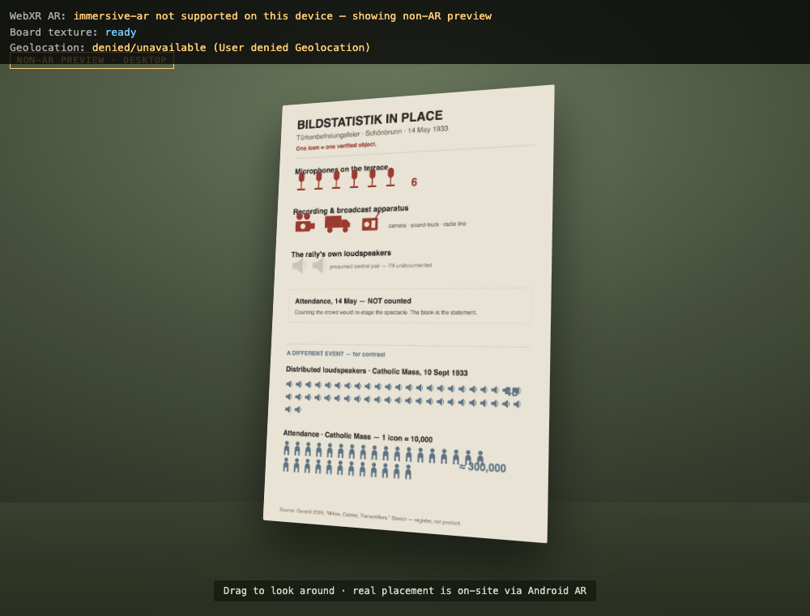

Mapping Austrofascism, in place
Research prototypes for situated, in-place storytelling at a contested site
Prototype 2 — Bildstatistik in place
Otto Neurath’s ISOTYPE pictograms (the Wiener Methode der Bildstatistik, a suppressed Red Vienna visual language) turned back on the 1933 rally: the event narrated as an abstract statistical chart rather than a reconstructed scene. Three variants, at increasing spatial commitment:

The flat board
The diagrammatic register itself — repeated standardised icons, one icon per verified thing.
Open →

Walk-through at 1:1
The statistics distributed at life size across a schematic parterre — you walk through the apparatus, and through the deliberate emptiness where attendance is left blank. Press 2 to overlay the September contrast.
Open →Prototype 1 — perspective shift
An audio-led concept that moves the body between the speaker’s and a participant’s standpoint at the rally. It is at concept stage and has no runnable demo here yet.